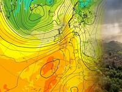
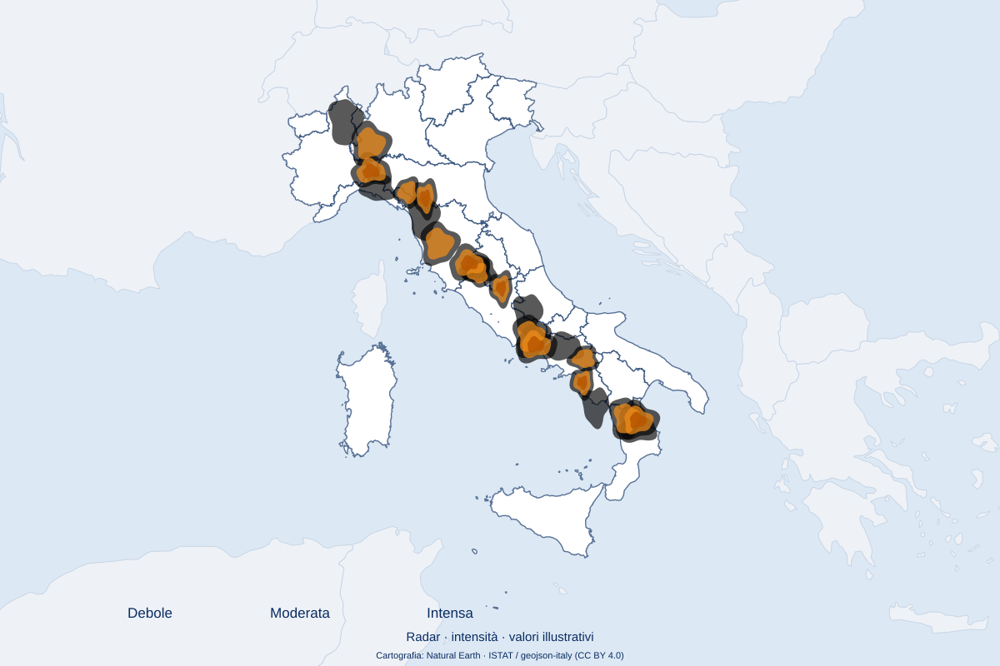
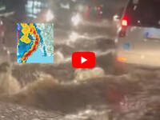

Perturbazione in transito. La giornata sarà contrassegnata da un diffuso maltempo al Nord, dalla Lombardia al Triveneto e sul Centro-Sud tirrenico dalla Toscana alla Campania centro settentrionale. Sono attese piogge localmente intense e qualche temporale. Piovaschi e schiarite soleggiate in Emilia Romagna, sulle Adriatiche e sul resto del Sud. Mari molto mossi, venti sostenuti da sud.
Previsioni Meteo Italia
Edizione acquisita ·
Prima pagina
Tutte le notizieMeteo weekend: Sabato ancora piogge localmente battenti al Centro-Sud, Domenica più stabile. Le previsioni
Protezione Civile Nazionale: allerta meteo arancione in Campania e Lazio, gialla in 14 regioni. Il bollettino

Meteo prossima settimana: avvio ancora con piogge e vento, dal 15 Ottobre temporanea alta pressione. Tendenza
Perturbazione in transito sull'Italia.
VENERDÌ: un fronte perturbato sospinto da intensi venti di Libeccio e Scirocco attraverserà l'Italia interessando il Nord e le regioni tirreniche.
SABATO E DOMENICA: le piogge interesseranno il versante Adriatico centro meridionale e localmente il resto del Sud, tornerà il bel tempo al Nord.
PROSSIMA SETTIMANA: lunedì, piogge al Nordovest. Da martedì ingresso di forti venti di Grecale e maltempo su medio e basso Adriatico, sole pieno al Nord e sulle Tirreniche.
Simulazione didattica · valori illustrativi

Rielaborazioni illustrative per il confronto didattico. Fonte dei contenuti: iLMeteo.it e rispettivi autori · acquisizione 8 ottobre 2026. Cartografia: Natural Earth · icone: Heroicons.
News Meteo
News Extra
-

-
Meteo: è tornata la neve sul Passo dello Stelvio: paesaggio imbiancato [Video]
8/10/2026 ore 18:49
-
Viareggio, maltempo: danni alle abitazioni e disagi sulle strade [Video]
8/10/2026 ore 18:45
-
Livorno, un grande capodoglio spunta a pochi metri dal porticciolo [Video]
8/10/2026 ore 18:20
Previsioni sintetiche
A cura di Antonio Sanò
Una perturbazione interessa il Paese. La giornata sarà contrassegnata da condizioni di tempo instabile o molto instabile al Nordest e al Sud, specie sul lato tirrenico. Attesi rovesci di pioggia localmente alternati a schiarite o pause asciutte. Non mancheranno dei temporali, specie al Sud. Piovaschi e schiarite soleggiate sul resto delle regioni. Venti moderati, mari mossi.
La pressione aumenta a partire dal Nord, una perturbazione collegata a un centro depressionario è in azione al Centro-Sud. La giornata sarà contraddistinta da un cielo poco o parzialmente nuvoloso al Nord e sui settori tirrenici. Sarà molto instabile con rovesci e qualche temporale sulle regioni adriatiche centro meridionali, al Sud e in Sicilia. Venti a rotazione ciclonica. Clima mite.
Pressione in aumento. Giornata con cielo nuvoloso o a tratti molto nuvoloso. Ci saranno ancora piogge su Molise, Puglia, coste tirreniche di Calabria e Sicilia.
Pressione in lento aumento. Giornata con cielo nuvoloso o molto nuvoloso. Al mattino potrà piovere al Nordovest e locali piogge potranno interessare anche i rilievi del Sud.
Anticiclone sull'Italia, ma soffiano venti da est. Calo termico notturno. Molte nubi con locali piogge sulle Adriatiche e sul basso Tirreno.
Venti da est. Giornata in gran parte stabile, ultime precipitazioni interesseranno la fascia adriatica meridionali e localmente i settori ionici.
Meteo nel mondo
Scegli un paese sulla mappa oppure cercalo per nome.
Scegli un paese
Le previsioni internazionali non sono state acquisite nella copia locale.
Previsioni disponibili: Milano